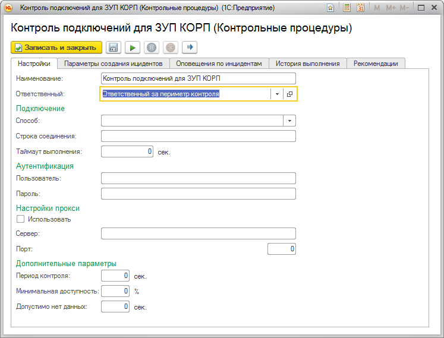
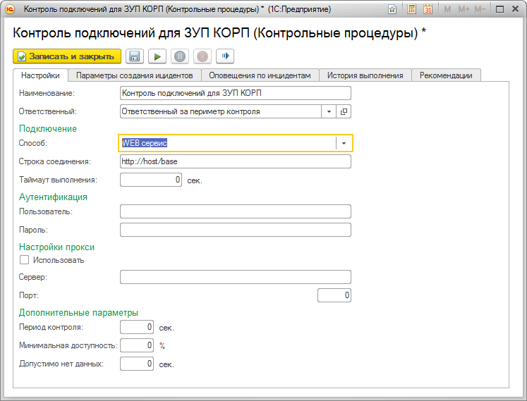
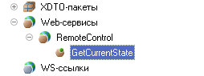
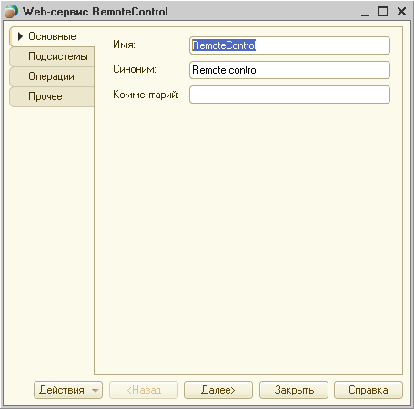
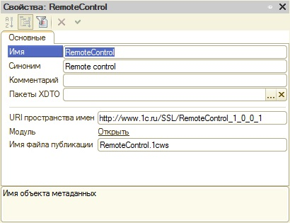
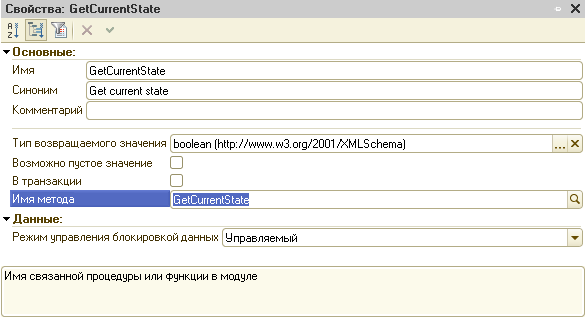
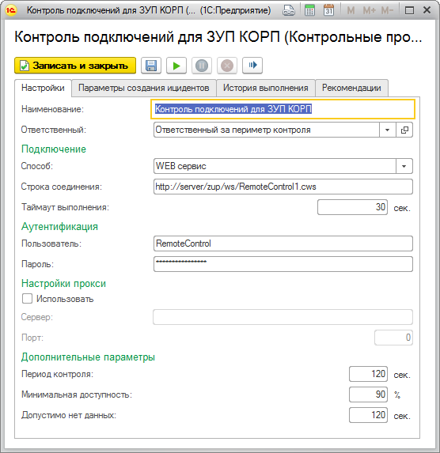
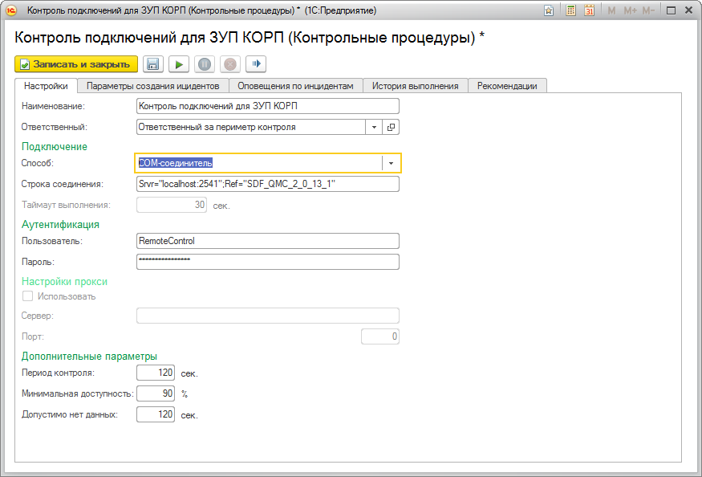

Контрольная процедура "Контроль подключений" позволяет оперативно обнаруживать проблемы с подключением к информационной базе.
При работе контрольной процедуры программа автоматически пытается устанавить соединение с информационной базой при помощи COM-соединителя 1С или через опубликованный web-сервис.
Для контроля подключений требуется выбрать способ, которым программа будет выполнять контрольные подключения к информационной базе.

Программа может использовать либо web-сервис, либо COM-соединитель.
При выборе способа подключения "WEB сервис" форма настроек примет следующий вид

При использовании web-сервиса требуется, чтобы в исследуемой информационной базе был опубликован web-сервис, удовлетворяющий следующим требованиям:
Примечание: данный web-сервис присутствует в конфигурации ЦКК.




Функция GetCurrentState()
Возврат Истина;
КонецФункции
После выполнения настроек по подключению web-сервиса форма примет вид

При выборе способа подключения COM-соединитель, форма настроек примет следующий вид:

В данной форме необходимо корректно заполнить строку соединения, пользователя и пароль.